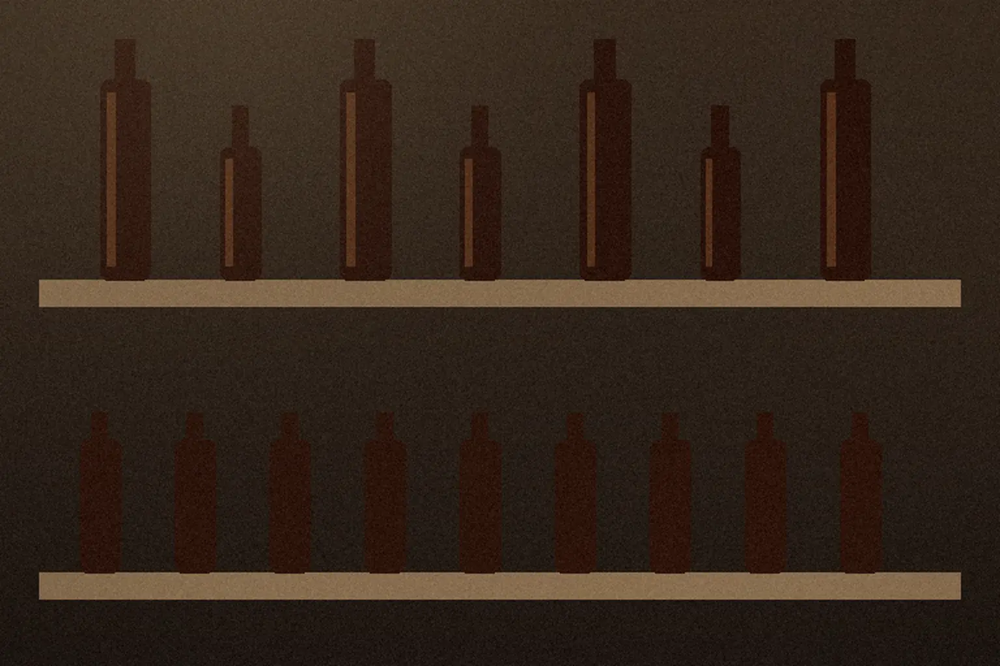

画像はAI生成のイメージです
五蔵の話のつづき
三つの買い方と、
送料のこと。
蔵の売店、取り寄せ、業務用。
どれも同じ二夏の醤油です。
届くまでの日数と送料を確かめてから、
注文票へ。
- 届くまで
- 四日ご注文から
およそ - 送料
- 770円から、地域ごとに
- 業務用
- 六本1.8Lで、定期に
買い方は、三つ。
| 項目 | 蔵の売店で | 取り寄せで | 業務用のご相談 |
|---|---|---|---|
| 向く方 | 味見をしてから | 遠方の方、贈り物に | 料理店・食品店の方 |
| 頼み方 | 蔵の入口の売店で、その場で | 電話か、 | 注文票で。お店の名前と |
| 受け取り | その場で | 宅配便で | 月1回か2回の |
価格はすべて税込で、醤油の代金に送料は含みません（送料は次の章）。業務用の価格とお支払いの方法は【要確認】です。
届くまでと、送料。

- ご注文電話か、注文票で
- 蔵からの確認内容と送料を、メールでお返しします
- お届けご注文から、およそ4日
| 同じ県内 | 770円 |
|---|---|
| それ以外 | 1,100円 |
| 北海道・沖縄 | 1,650円 |
送料無料1回のご注文が 8,000円以上のとき
二夏ものの量に限りがあるため、20L以上の樽売りはしていません。
注文票
本数を入れると、合計がその場で分かります。無理なおすすめはしません。